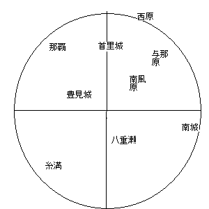

概要
記憶には記憶時間ごとに長期記憶、中期記憶、短期記憶に分けられる。中期記憶は10時間程度、短期記憶には数十秒程度である。
物事を学習する場合、長期記憶にする必要がある。
長期記憶する基本は定期的に思い出すこと。
トップ目次
覚えるコツ
- イメージ化しながら覚える。
- リズムで覚える。
- 手で書いて覚える。
- 歩きながら覚える。
- 声に出しながら覚える。
- ストーリーをつけて映像化しながら覚える。
- 水分をとりながら覚える。
- 覚えるべき物事が複数ある場合、物事の件数を覚える
- 声に出しながら覚える。
- 感情が伴うと覚えやすくなる。
- 興味があることは、脳が活性するため、記憶力しやすい。
- 遠くを眺めると、脳の角回が働くため、記憶能力が向上するという。
トップ目次
理解しながら覚える
- 子どもは単語を覚えるのは得意だが、理論を覚えるのは苦手である。大人はその逆。
- 丸暗記でなく理解する方が良い。
- 好奇心のある物事は覚えやすい。
- 注釈を書き込みながら覚える。
- 他の事柄と関連づけながら覚える。連想記憶法。
- 重要な付属情報と関連づけて覚える。（たくさん付属情報があると混乱する）
トップ目次
物事を整理しながら覚える
物事の情報を加工して整理すると覚えやすくなります。以下は情報の整理例です。
- 物事を並べる
- 物事をグループごとに分類する(物事の グルーピング )
- 物事を文章化する
- 物事をきれいにまとめてコンテンツ化する
- 物事を図解化する
- 覚えにくい数値データであってもグラフ化すればイメージで覚えられる
覚えた物事の知識は随時、加工していくと良いです。
トップ目次
効率よく覚える
- 脳は似たような複数の物事を１つに凡化する。 なので複数の類似する物事をまとめて覚えると効率が良い。
- 概観を理解してから、細かいところを覚えると効率が良い。
トップ目次
復習の方法
- 長期記憶するためには復習が必要である。
- 復習は、10分後、10時間後、10日後、100日後と段階をつけて行う方法がある。
- 復習する際、類似する事柄を理解するついでに行うと良い。
- 朝は復習に最適である。
- 復習は30分程度で問題ない。
トップ目次
思い出す力、想起力
覚えた事柄を思い出しやすくする想起力が必要です。
想起力を高めるには、溜め込んだ知識を様々な形で出力します。
想起力を高める方法
- リハーサルを行う。
- 講演会、宣教などの場数をこなす
トップ目次
逆向抑制
「逆向抑制」とは、記憶の上書きより、思い出しづらくなることです。
別の物事が起こると、記憶が上書きされてしまいp前の物事を忘れてしまいます。
逆向抑制の対策は、間隔を空けながら数回に分けて記憶することです。
逆向抑制は不利益なことばかりでなく、 つらい記憶も上書きして忘れるという利点もあります。
トップ目次
睡眠と記憶力
- 睡眠不足は記憶力を低下させる。
- 睡眠は5時間をきると記憶力が低下する。
- 十分な睡眠はストレスをやわらげる。
- 睡眠により記憶の整理が行われる。
- 午後11時ごろには寝る事。
トップ目次
地図の覚え方
まず基本図形として円を描き、その中に十字線を引く。
基本図形の中に覚える地名を上下左右に書き込んで覚える。

トップ目次
人の覚え方
- 名前は忘れやすい。
- 付属情報が増えると、それに重きが行き、人の名前を忘れることがある。
- 人を覚える時は名前よりも、どんな人で、何をしていたかを覚える。
- 人の名前は定期的に思い出すようにしないと忘れる。
- 名前は定期的に思い出したり口に出すことが必要。
トップ目次
孤立した記憶
- 脳は思い出せず孤立状態となっている物事も覚えており、何らかのきっかけで思い出すことがある。
トップ目次